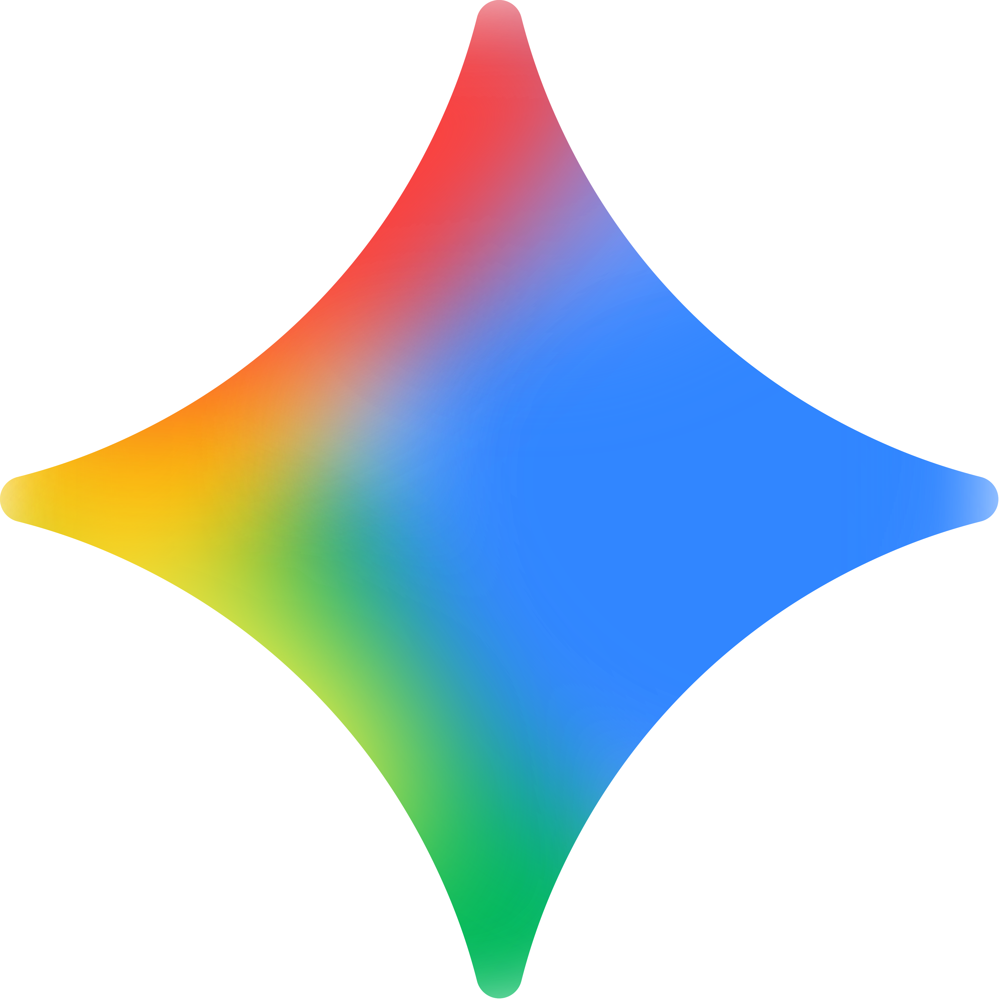

Problemas
do dia a dia?
A gente resolve.
Descubra soluções, ferramentas e ideias
para facilitar sua vida de um jeito simples.

mais facilidade
por favor!
Em destaque
Como bloquear chamadas de spam no celular?
Evite ligações indesejadas com algumas configurações simples no seu celular.
Em destaque
Como organizar as saídas e retornos dos alunos?
Conheça o I/O Regulator, protótipo para reduzir interrupções e manter o foco na aula.
Em destaque
Como organizar os estudos com IA, de graça?
Junte seu material, peça um plano e estude com foco usando só ferramentas gratuitas.

Em destaque
Como organizar a gestão de uma funerária?
Conheça o Memoriar, sistema onde as memórias são vivas.